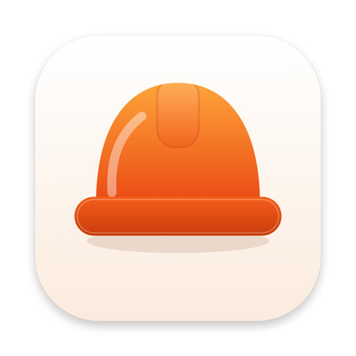

Foreman
Adatvédelmi irányelvek
Röviden
A munkáid az eszközödön és a saját privát iCloudodban maradnak. Nincs fiókunk, és nincs olyan szerverünk, amely az adataidat tárolná, és nem látjuk a munkáidat. A Foreman 1.1 és újabb verziói nem tartalmaznak elemzést, összeomlás-jelentést vagy hirdetést. Utoljára frissítve: 2026 októberében.
Az általad megadott adatok
A Foreman azt tárolja, amit beírsz:
- Munka adatai: cím, ügyfél neve, telefonszám, e-mail-cím, cím, jegyzetek, állapot
- Az általad rögzített árajánlatok, számlák, tételek, árak, adó, kedvezmények és befizetések
- A munkákhoz csatolt fotók
- A munkákhoz tartozó időbejegyzések
- Vállalkozási adatok (név, telefonszám, e-mail-cím, logó), óradíj és számlabeállítások
Ezeket az adatokat az eszközöd tárolja, és ha be vagy jelentkezve az iCloudba, a CloudKiten keresztül privát módon szinkronizálódnak a saját iCloud-fiókodba. Soha nem küldjük el őket nekünk, és senki mással nem osztjuk meg.
iCloud
Ha használod az iCloudot, az adataid a privát iCloud-tárolódban vannak, és az Apple adatvédelmi irányelvei vonatkoznak rájuk. Mi nem férünk hozzájuk.
Nincs elemzés, nincs követés
A Foreman 1.1 és újabb verziói nem tartalmaznak elemzést, összeomlás-jelentést vagy hirdetést, és nem kommunikálnak semmilyen saját szerverünkkel. Az 1.1 előtti verziók a Firebase Analytics és a Firebase Crashlytics szolgáltatást használták (anonimizált használati események és összeomlás-jelentések, a Google szolgáltatásai). Ez a kód az 1.1-ből el lett távolítva, és a korábban gyűjtött adatok közül semmit nem használunk. Ha még az 1.1 előtti verziót futtatod, a frissítés leállítja ezt.
Kamera, fotók és helyadat
A Foreman csak akkor kér hozzáférést, amikor megérinted a megfelelő gombot: a kamerához munkafotó készítésekor, a fotókönyvtárhoz (a rendszer választóján keresztül) fotó csatolásához vagy a logód kiválasztásához, a helyadatodhoz pedig egyszer, a munkahely címének kitöltéséhez. A fotók az eszközödön és a privát iCloudodban maradnak. A gépelés közbeni címjavaslatok az Apple Mapsből jönnek.
Vásárlások
A Foreman Pro megvásárlását (és az 1.0-s verzióban értékesített havi előfizetést) teljes egészében az Apple kezeli az App Storen keresztül. Nem gyűjtjük és nem tároljuk a fizetési adataidat.
Mac és Android
A Mac-alkalmazás a munkáidat a Macen tárolja, és az iPhone- és iPad-alkalmazáshoz hasonlóan a saját privát iCloudodban is. Androidon nincs iCloud és fiók: a munkáid a telefonon maradnak, és exportálhatsz egy biztonsági mentési fájlt, majd importálhatod egy másik Android-telefonon. Ha az Android saját biztonsági mentése be van kapcsolva, azt akár a Google-fiókodba is elmentheti. A Foreman Pro egyszeri vásárlását a Google Play intézi. Az Android-alkalmazás magától nem hoz létre hálózati kapcsolatot, és nincs benne elemzés, hirdetés vagy követés.
Az adatok megőrzése és törlése
Minden adatod az eszközödön és, ha úgy döntesz, az iCloud-fiókodban van. Az app törlése eltávolítja az eszközön tárolt adatokat. Az iCloudban lévő másolat eltávolításához töröld a Foreman adatait az iPhone Beállítások › a neved › iCloud › Fiókok tárhelyének kezelése menüjében.
Gyermekek
A Foreman nem 13 év alatti gyermekeknek szól, és tudatosan nem gyűjtünk adatot gyermekektől.
Változások és kapcsolat
Ha ez az irányelv megváltozik, frissítjük a fenti dátumot. Az adataiddal kapcsolatos kérdések vagy kérések: khangazun@gmail.com.
Ez a fordítás a kényelmet szolgálja; az irányadó változat az angol nyelvű adatvédelmi irányelvek.